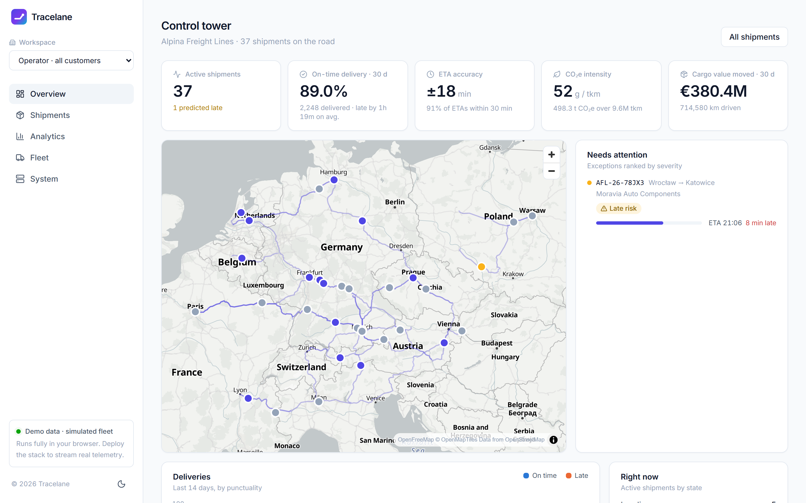
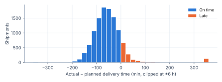
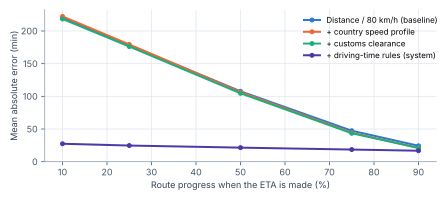
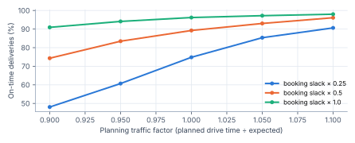

Visibility in road freight is still largely manual: dispatchers phone drivers and forward status by e-mail. The project brief (TU Wien × AWS) asked for a proof of concept that turns GPS events into a live dashboard. I extended the brief to four goals: G1 low latency from GPS ping to screen (design target < 5 s); G2 correct state under the at-least-once, possibly reordered delivery that MQTT and stream processing imply; G3 information that is useful beyond a dot on a map — realistic arrival predictions and service metrics such as on-time rate and CO₂e; G4 no servers to operate and cost proportional to use.
Contributions. (i) A serverless reference implementation, fully defined as infrastructure-as-code and covered by tests; (ii) an operational fleet simulator that produces realistic telemetry together with ground truth; (iii) a rule-aware ETA predictor with an ablation against a naive baseline; (iv) an order-independent, idempotent ingestion design validated by fault injection; (v) a web application with an operator control tower, a per-customer portal and public tracking links.
/metrics; React app on CloudFront/S3cdk deploy.Key design decisions.
| Decision | Alternative | Rationale |
|---|---|---|
| Kinesis between IoT Core and Lambda | IoT rule invoking Lambda directly | Buffers bursts, keeps per-shipment order (partition key), and allows replay after a bug fix; costs one shard-hour. |
| Per-shipment sequence numbers + conditional writes | Last-writer-wins on timestamps | Makes processing idempotent and order-safe under at-least-once delivery without a separate de-duplication store (G2). |
| Two tables: current state + event log | Single state table | O(1) reads for the live board; one ordered Query for a shipment's timeline; delivered records drive the KPIs. |
| DynamoDB on-demand | PostgreSQL (RDS) | Access is by key, no joins; no idle cost, no VPC or patching (G4). |
| 2 s REST polling | WebSocket push | Meets the 5 s target with far less state (no connection table); push is future work. |
| Partial-batch failure reporting | Fail whole batch | Only records after a failure are retried; poison messages go straight to the dead-letter queue. |
Read model. The API derives everything a user sees from stored telemetry: predicted delay (ETA minus planned delivery), exceptions (late risk, temperature excursion, border hold, lost signal after 5 min, operator flag) and severity. Operator-owned fields (a manual flag) are written by a separate endpoint and merged on read, so the next GPS ping cannot overwrite them.

Real telematics data could not be obtained, and random-walk GPS points would make every metric meaningless. I therefore built a discrete-time simulator (1-minute steps) in which KPIs emerge from modelled operations. It is implemented once in Python (the device simulator) and ported to JavaScript for a zero-setup browser demo; both share one parameter file.
The fleet has ${trucks} trucks that chain loads: after delivery a truck takes its next job from the destination hub, so the network state evolves continuously. Aggregate outcomes (Table 2) are stable across seeds.
| Outcome (${days}-day run) | mean ± sd over ${seeds} seeds |
|---|

All experiments run from one script (evaluation/run_experiments.py) with fixed seeds; this report is generated from
its output.
For every delivered shipment I record the arrival time predicted at 10, 25, 50, 75 and 90 % of the route and compare it with the actual delivery time (n = ${n_eta} shipments per checkpoint). The baseline is the method in the original project proposal: remaining distance divided by a constant speed. Three variants add one model component at a time; the last one is the predictor the system uses.
| Predictor | MAE @10 % | @25 % | @50 % | @75 % | @90 % | ≤ 30 min @50 % | P90 @50 % (min) |
|---|

Encoding driving-time rules is what matters: speed profiles and customs alone barely change the error, because the dominant source of error on long lanes is whether a mandatory break or an 11-hour rest lies ahead. At 10 % progress the deployed predictor is within 30 minutes for ${w30_full_10} of shipments (baseline: ${w30_naive_10}). ${near_dest_sentence}
The evaluation found a bug. A first run showed a cluster of predictions near the destination whose predicted arrival was about ten hours too late: when the daily driving limit and the 4.5-hour break limit fell close together, the predictor scheduled an 11-hour rest, while the driving model (correctly) let the driver take a 45-minute break and use the 10-hour extension. After rewriting the predictor to follow exactly the same decision order, ${over2h_full_90} of predictions at 90 % progress miss by more than two hours; I inspected these cases for one seed (7 of 2,170 predictions): all seven had a traffic jam after the prediction, which in six cases consumed the time the driver needed to finish within the extension and forced a daily rest the predictor could not foresee. Caveat: the predictor shares the simulator's rules, so this experiment measures the value of encoding operational constraints, not accuracy on real roads (Section 5).
Figure 5 varies the dispatcher's traffic factor and the booking slack. With the defaults the on-time rate is ${sens_base} at a median early arrival of ${sens_base_early} min. Across the grid it ranges from ${sens_lo} to ${sens_hi}; buying the last points of on-time performance costs trucks waiting at the gate (median ${sens_hi_early} min early at the most conservative setting). For a carrier the relevant quantity is therefore not the on-time rate alone but its trade-off with idle time — which the metrics API makes visible per customer and lane.

I fed the real process_event Lambda (against locally mocked DynamoDB and SQS) with ${e4_msgs} telemetry messages, once in order
and once with ${e4_dups} duplicates, ${e4_bad} malformed messages and local reordering. Result: ${e4_same} of ${e4_ship} shipments ended in an
identical final state, the event log was identical (${e4_ev_clean} vs. ${e4_ev_pert} events), and all ${e4_dlq} malformed messages were routed to
the dead-letter queue without retries. The first version of this experiment exposed a real bug: the "ETA at halfway" value behind the
ETA-accuracy KPI was taken from whichever message arrived first. It is now written by a separate conditional update in which the
lowest sequence number wins, making it independent of arrival order.
Messages average ${msg_bytes} bytes (P95 ${msg_p95}). A Kinesis shard accepts 1 MB/s or 1,000 records/s [8]; with these sizes the byte limit binds first. At the realistic 30 s reporting interval one shard serves on the order of ten thousand trucks. Messages currently repeat static shipment data (parties, documents) in every ping; sending it once per shipment would cut message size by more than half.
| Report interval | Trucks per shard | Msgs/day per 1,000 trucks |
|---|
End-to-end latency (G1) is argued from the design — sub-second ingestion plus a 2 s poll — but was not measured on a deployed stack under load; the dashboard records per-message ingest latency (device timestamp → database), which a deployment would report. Cost (G4) follows AWS's pay-per-use model; the only fixed charge is the Kinesis shard.
/metrics scans the state table, which is adequate for thousands of shipments; larger deployments need
a secondary index and pre-aggregated daily metrics.Tracelane shows that a small, fully serverless stack can deliver live freight visibility with correct semantics under at-least-once delivery, and that the most valuable "intelligence" for arrival prediction in road freight is not a better speed estimate but knowledge of the operational rules — breaks, rests and borders — that dominate long-haul timing. Building the simulator to evaluate this also turned out to be the most effective way to find correctness bugs in the pipeline.